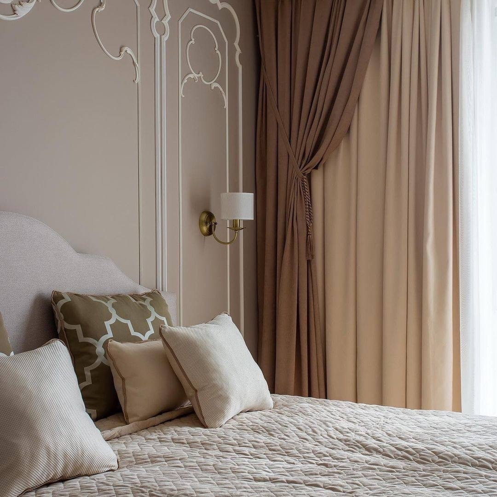

СОТРУДНИЧЕСТВО
Материалы
для вашего проекта
Дизайнерам и архитекторам
Начните со спецификации, развёрток или референсов. Обсудите с салоном подбор материалов, сочетаемость и альтернативы выбранным позициям
Что подготовить
План и размеры, список артикулов, пожелания к отделке, бюджет и планируемые сроки работ

Мастерам и отделочникам
Уточните требования к основанию, монтажу и комплектующим у консультанта. Для технических решений используйте инструкции производителя конкретного материала
Партнёрские условия, обучение, сроки расчёта и состав услуг согласуются с салоном
Сотрудничество на сайте салона ↗